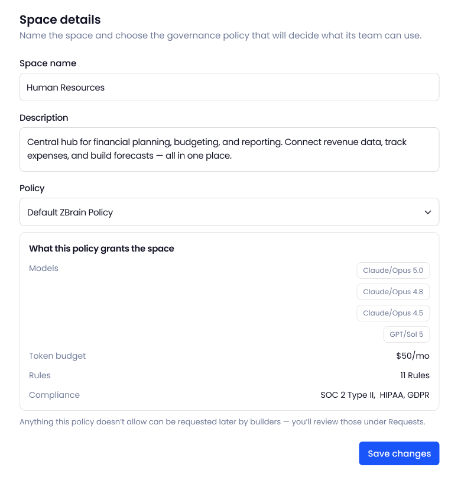
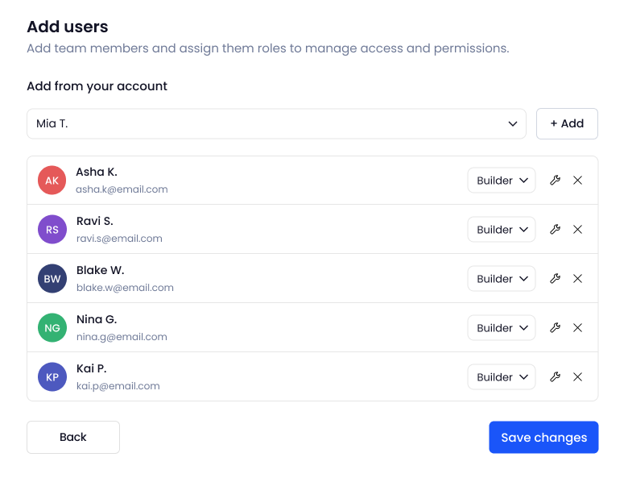

The context
One platform, two portals
ZBrain has two kinds of user. Builders make agents and solutions in the user portal, which Vivek designed. Admins run the platform from the console I designed, and set the terms the builders work within.
Spaces: the admin creates one for each department and adds its builders.
Policies: every space has one. A new space starts on the default governance policy until the admin gives it one of its own.
Access: builders in a space get the models, API keys and budget its policy contains, and work within its rules.
Requests: when building or deploying needs more, such as a model, a connection, API access or budget, a builder asks and the admin decides.
Builders decide what an agent does. The console decides what it’s allowed to do.
Where it started
Policy started on the agent, then moved up to the space
I first put governance on the agent: each one carried its own rules, model access, budget and monitoring, because that is how the platform was built. But organisations run budget, data and risk by department, and every new agent meant setting it all up again. So I moved policy up to the space: one policy per department, inherited by every agent and solution built in it, with a default so that no space starts without one.
The approach
Learn the platform, then design its controls
ZBrain was still building what the console had to govern. I read each part as it went in rather than afterwards, so the controls were designed against what the system actually did.
Governance: rules, model access, budgets, compliance (GDPR, HIPAA, SOC 2), exceptions and audit.
Connectors: how Teams, Drive, Sheets and Slack bring a department’s data in.
Deployment: how a release goes out, what’s checked first, and what removal cleans up.
Three compliance frameworks to support, four things a builder can run out of, one deployment path with checks that can fail. The console’s menu comes out of that rather than from a sitemap drawn first: the Observatory and Spaces at the top, then Access, Resources, Governance and Account, with the pages inside each.
- Observatory
- Spaces
Access
- Users
Resources
- Models
- Connections
- API Keys
Governance
- Policies
- Requests
- Agent log
- Usage log
- Deployments
- Audit & Activity
Account
- Billing
- My Account
The team around it: Kapil for direction and critique, Vivek on the builder side of the same platform, and the engineers building what the console governs. The move from agent to space came out of that work, not from a research round run separately.
I did not run admin interviews for this. The console was designed against the platform and against how enterprises are structured, then corrected in build and in design QA, which is where most of what was wrong with it surfaced.
The key feature
One policy governs the whole space
A space’s policy decides what its builders get (models, API keys and budget) and the rules and compliance their work has to meet, from the first build to the release and the agents that run after it. Every action then ends one of three ways.
Where the work runs
The space’s policy
How it ends
- Build solutionsModels, data and connections
- Deploy releasesTo a cloud target
- Run agents and API keysIn the app and outside it
- Models and API keysWhat the space’s builders can use
- BudgetCredit limits per period and key
- Rules and complianceConditions, actions and frameworks like GDPR
- AllowedThe action goes ahead
- Against a ruleBlocked and logged, with the rule that stopped it
- Needs moreA request to the admin; once approved, it applies to the space
Design decisions
Five rules the screens are built on
An admin’s change reaches a whole department. Each rule makes that change safe to make.
- Policy on the space, not the agentI gave up per-agent settings so one change reaches the whole department.
- Preview before you attachA policy’s models, budget, rules and compliance, shown as it’s chosen.
- A limit is a requestBuilders ask; one approval applies it to the space.
- Exceptions expireEach one is scoped to a space or solution, with an end or review date.
- Irreversible takes more than a clickTyped to confirm, progress shown, removal confirmed.
In practice
A day in the console, from the first signal to a release record
Five steps from one admin’s day.
01
See what needs attention
The Observatory opens on cost, runs, agents at risk and policy violations. Below them, governance events arrive as they happen, and an agent in warning can be stopped straight from the table.

02
Set up a space for each department
One space per department, set up in two steps: name it and choose its policy, which starts on the default, then add builders from the account. The form shows what the policy grants (models, budget, rules and compliance) before anything is saved.


03
Define the policy
A policy keeps rules, models, budget, compliance and exceptions apart, so each can change without touching the rest.
Every policy, with the spaces it governs, its base grants and its overrides.

Each rule pairs a condition with an action, from deny to allow.

Which models and providers the policy allows, and for which use cases.

A credit limit per period, applied to each key, so one heavy user can’t spend a whole space’s budget.

Regulatory frameworks are switched on per policy, not written as rules.

Exceptions bend the policy for one space or solution, and each one carries an expiry or a review date.

Adding a rule, two ways
Guided, from a plain-language description (left), or manual, in four steps through to scope and review (right).
04
Answer builder requests
When building or deploying needs something the policy doesn’t grant (a model, a connection, API access or more budget), the builder sends a request. Approving applies it to the space at once, and every decision stays in the history.

05
Trace what happened, and what shipped
Everything the console does leaves a record behind it. A blocked call shows the rule that stopped it, usage shows spend and runs by space, model and provider, and every release carries its version, space, cloud target and approver. A target that fails its checks blocks releases to it.


The details
The states around the screens, held to the build
High-stakes admin actions needed more than a main screen. Deleting a user is typed, not clicked. Regenerating a key says what will break, and the new key arrives with the code to use it. A deletion shows its progress, then confirms what was removed. And edits open beside the list, not on top of it.


Design QA: I review each build against the designs and raise visual and functional issues for engineering. One pass on spaces and users raised 13 subtasks.

Where it stands
Built, in testing, and not yet measured
The console is built and running on the platform, against demo spaces, agents and solutions set up for testing. No department is on it yet, so there is nothing here I can call a result.
- In testingBuilt and running on ZBrain alongside the user portal, on demo spaces and agents
- 12 areasdesigned end to end, from the Observatory to deployments and audit
- Wider releaseis next; I’m refining flows from issues design QA is still turning up
What holds without a single user: a new space starts on the default governance policy, so there is no state in which a department runs ungoverned. Every action ends one of three ways, and the two that are not “allowed” are both recorded: blocked with the rule that stopped it, or turned into a request with the decision kept. Those are guarantees of the structure, not of its reception.
What the build has already told me: one design QA pass over spaces and users alone raised 13 subtasks for engineering. Design QA is the only feedback loop running on this console so far, and most of what was wrong with it has come from there rather than from me.
What I will measure when departments are on it: how long a space takes to set up and how often its policy is edited in the first month, how long a builder request waits before a decision, how many actions are blocked and whether admins then widen the rule or uphold it, and which of the five rules the screens are built on survive a hundred policies. The Observatory already records what these need; nothing has run long enough to read.
What I learned
Start with how people already work
Design for how people think: I first put a policy on every agent, because that’s how the system was built. But admins think in departments, not agents. Once the policy moved to the space, most of the screens became simpler.
Learn it before you design it: I couldn’t design for connectors or deployments until I understood how they worked. Learning first meant I was designing for what admins really do, not what I guessed they do.
Show what will happen before it happens: one change from an admin can affect a whole department. So the console shows what a policy gives a space, or what a new key will break, before anything is confirmed.